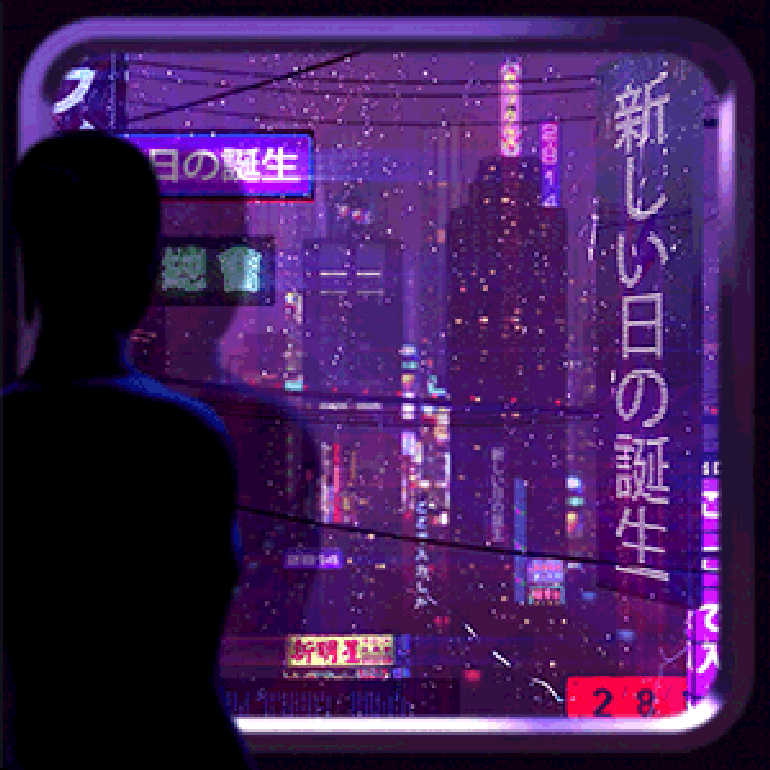
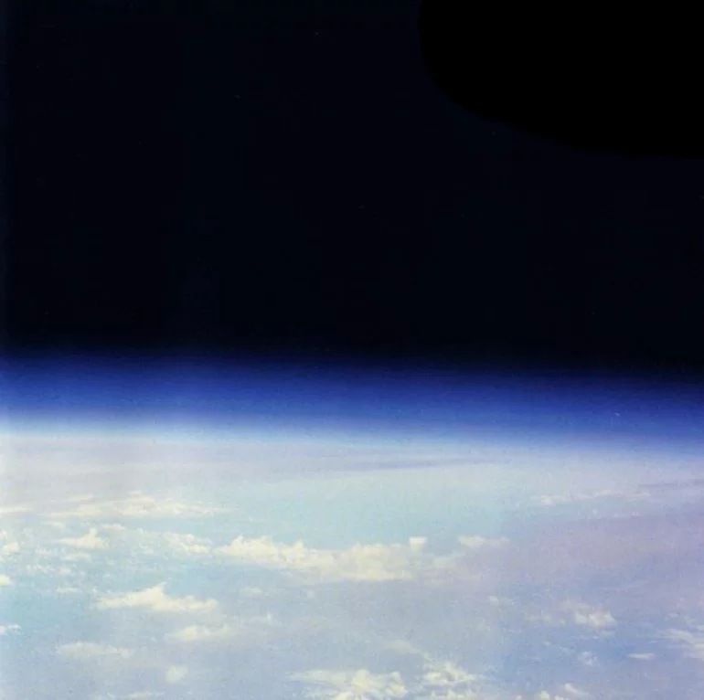
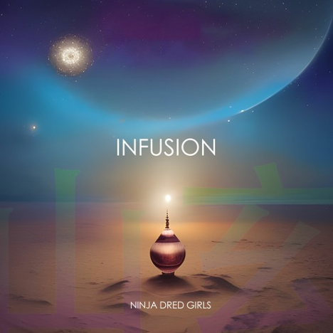

poemme's music is the essence of gentleness, of the universe-in-the-form-of-Mother-Nature nurturing the listener into alpha-wave bliss.
yugenro's music is quite distinct to its creator, Keith Rowley-Yugen, who dwells in it as much as he can.

2814's music is thick, rich, grand, melodic, and beautiful. Perfect music to dream to.

Telomere's music stretches time and space via multi-layered swirls of electronic arpeggiations, that propels us across the grand and slow universe.
Billow Observatory's music washes over the listener in waves of shimmering steel-string space. Never in a rush, the Observatory is always open for viewing.

The Ninja Dred Girls combine indigenous musics of Brazil, Japan, Jamaica, Morocco, the Central African Republic, and Western Java, into a cosmic ambient coherence that is surely the key to the universe.